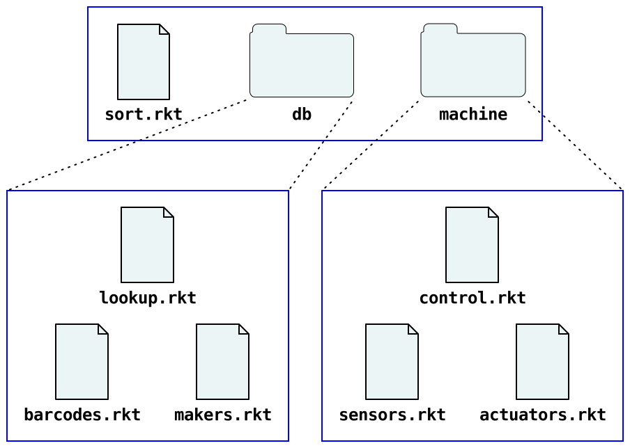

6.1 模块基础
每个 Racket 模块通常驻留在自己的文件中。例如,假设文件 "cake.rkt" 包含以下模块:
"cake.rkt"
#lang racket (provide print-cake) ; 画一个带 n 支蜡烛的蛋糕。 (define (print-cake n) (show " ~a " n #\.) (show " .-~a-. " n #\|) (show " | ~a | " n #\space) (show "---~a---" n #\-)) (define (show fmt n ch) (printf fmt (make-string n ch)) (newline))
然后,其它模块可以导入 "cake.rkt" 以使用 print-cake函数, 因为 "cake.rkt" 中的 provide 行明确导出这个定义 print-cake。 show 函数对 "cake.rkt" 是私有的(即它不能从其它模块被使用),因为 show 没有被导出。
下面的 "random-cake.rkt" 模块导入 "cake.rkt":
"random-cake.rkt"
#lang racket (require "cake.rkt") (print-cake (random 30))
如果 "cake.rkt" 和 "random-cake.rkt" 模块在同一个目录里, 在导入 (require "cake.rkt") 中的这个相对引用内的引用 "cake.rkt" 就会工作。 UNIX 样式的相对路径用于所有平台上的相对模块引用,就像 HTML 页面中的相对的 URL 一样。
6.1.1 组织模块
"cake.rkt" 和 "random-cake.rkt" 示例演示如何组织一个程序模块的最常用的方法: 把所有的模块文件在一个目录(也许是子目录),然后有模块通过相对路径相互引用。 模块的一个目录可以作为一个项目, 因为它可以在文件系统上移动或复制到其它机器上,并且相对路径保存模块之间的连接。
作为另一个例子,如果你正在构建一个糖果分类程序,你可能有一个主 "sort.rkt" 模块, 它使用其它模块访问一个糖果数据库和一个控制分拣机。 如果这个糖果数据库模块本身被组织进了处理条码和厂家信息的子模块,那么这个数据库模块可以是 "db/lookup.rkt", 它使用辅助器模块 "db/barcodes.rkt" 和 "db/makers.rkt"。 同样,这个分拣机驱动器 "machine/control.rkt" 可能会使用辅助器模块 "machine/sensors.rkt" 和 "machine/actuators.rkt"。

"sort.rkt" 模块使用相对路径 "db/lookup.rkt" 和 "machine/control.rkt" 从数据库和机器控制库导入:
"sort.rkt"
#lang racket (require "db/lookup.rkt" "machine/control.rkt") ....
"db/lookup.rkt" 模块类似地使用相对路径给它自己的源来访问 "db/barcodes.rkt" 和 "db/makers.rkt" 模块:
"db/lookup.rkt"
#lang racket (require "barcode.rkt" "makers.rkt") ....
同上,"machine/control.rkt":
"machine/control.rkt"
#lang racket (require "sensors.rkt" "actuators.rkt") ....
Racket 工具所有工作自动使用相对路径。例如,
racket sort.rkt
在命令行运行 "sort.rkt" 程序和自动加载并编译所需的模块。 对于一个足够大的程序,从源编译可能需要很长时间,所以使用
raco make sort.rkt
参见 raco make: 将源代码编译为字节码 , 了解更多关于 raco make 的信息。
编译 "sort.rkt" 及其所有依赖成为字节码文件。 如果字节码文件存在,运行 racket sort.rkt,将自动使用字节码文件。
6.1.2 库集合
一个 集合(collection) 是一个已安装的库模块的按等级划分的组。 一个 集合 中的一个模块通过一个引号引用,无后缀路径。 例如,下面的模块引用 "date.rkt" 库,它是 "racket"集合 的一部分:
#lang racket (require racket/date) (printf "Today is ~s\n" (date->string (seconds->date (current-seconds))))
当你搜索在线 Racket 文档时,搜索结果显示提供每个绑定的模块。 或者,如果你通过单击超链接到达一个绑定文档,则可以在绑定名称上悬停以查找哪些模块提供了它。
一个模块的引用,像 racket/date,看起来像一个标识符, 但它并不是和 printf 或 date->string 相同的方式对待。 相反,当 require 发现一个被引号包括的模块引用, 它转化这个引用为一个基于 集合 的模块路径:
首先,如果这个引用路径不包含 /,那么 require 自动添加一个 "/main" 给这个引用。 例如, (require slideshow) 等价于 (require slideshow/main)。
其次,require 隐式添加一个 ".rkt" 后缀给这个路径。
最后,require 在已安装的 集合 中通过搜索来决定路径, 而不是将路径处理为相对于封闭模块的路径。
作为一个最近似情况,一个 集合 被实现为一个文件系统目录。 例如,"racket" 集合大多位于 "racket" 安装的 "collects" 目录中的一个 "racket" 目录中, 如以下报告:
#lang racket (require setup/dirs) (build-path (find-collects-dir) ; main collection directory "racket")
然而,Racket 安装的 "collects" 目录仅仅是一个 require 寻找集合目录的地方。 其它地方包括用户指定通过 (find-user-collects-dir) 报告的目录以及通过 PLTCOLLECTS 搜索路径配置的目录。 最后,并且最典型,集合通过安装的 包(packages) 找到。
6.1.3 包和集合
更确切地说,racket/gui 由 "gui-lib" 提供, parser-tools/lex 由 "parser-tools-lib" 提供, 并且 "gui" 和 "parser-tools" 包用文档扩展 "gui-lib" 和 "parser-tools-lib"。
Racket 程序不直参考 包(packages)。 相反,程序通过 集合(collections) 参考库,添加或删除一个 包 改变可获得的基于集合库的集合。 一个单个包可以在多个集合中提供库, 并且两个不同的包可以在同一集合(但不是同一个库,并且包管理器确保安装的包在该层级不冲突)中提供库。
有关包的更多信息,请参阅 Racket 中的包管理 。
6.1.4 添加集合
回顾《组织模块》部分的糖果排序示例, 假设 "db/" 和 "machine/" 中的那个模块需要一套公共的助手函数。 辅助函数可以被放在一个 "utils/" 目录里, 同时 "db/" 或 "machine/" 中的模块可以用开始于 "../utils/" 的相对路径访问公用模块。 只要一组模块在一个单一项目中协同工作,最好保持相对路径。一个程序员可以不用知道你的 Racket 配置而继承相对路径引用。
有些库是为了被用于跨多个项目,因此将库的源保存在一个目录内与它的使用没有意义。 在这种情况下,最好的选择是添加一个新 集合。 这个库处于一个集合里后,它可以用一个非引用路径引用,就像是包括在 Racket 发行里的库一样。
你可以通过将文件放置在 Racket 安装包里或通过 (get-collects-search-dirs) 报告的一个目录下添加一个新的集合。 或者,你可以通过设置 PLTCOLLECTS 环境变量添加到搜索目录列表。 如果你设置 PLTCOLLECTS, 通过用冒号(UNIX 和 Mac OS)或分号(Windows)启动这个值包括一个空路径,从而保留原始搜索路径。 然而,最好的选择是添加一个 包。
创建一个包 并不 意味着你必须用一个包服务器或者执行一个复制你的源代码到一个归档格式中的绑定步骤注册。 创建一个包只简单地意味着使用包管理器将你的库作为一个来自它们当前源位置的的集合的本地访问。
例如,假设你有一个目录 "/usr/molly/bakery", 它包含 "cake.rkt" 模块(来自于本节的 开始 部分)和其它相关模块。 为了使模块可以作为一个 "bakery" 集合获取,或者
使用 raco pkg 命令行工具:
raco pkg install --link /usr/molly/bakery
当所提供的路径包含一个目录分隔符时,这里 --link 标记实际上不需要。
从 File(文件) 菜单使用 DrRacket 的 Package Manager(包管理器) 项。 在 Do What I Mean(做我打算的) 面板,点击 Browse...(浏览......), 选择 "/usr/molly/bakery" 目录,并且单击 Install(安装)。
之后,从任何模块中 (require bakery/cake) 将从 "/usr/molly/bakery/cake.rkt" 输入 print-cake 函数。
默认情况下,你安装的目录的名称既用作 包 名称,又用作包提供的 集合。 同样,包管理器通常默认只为当前用户安装,而不是在一个 Racket 安装的所有用户。 有关更多信息,请参阅《Racket 中的包管理(Package Management in Racket)。
如果你打算分发你的库给其他人,请仔细选择集合和包名称。 集合名称空间是分层的,但顶级集合名是全局的,包名称空间是扁平的。 考虑将一次性库放在一些顶级名称下,就像 "molly" 这种标识制造器。 在制作烘焙食品库的最终集合时,使用像 "bakery" 这样的一个集合名。
在你的库被放入一个 集合 之后,你仍然可以使用 raco make 以编译库源, 但更好而且更方便的是使用 raco setup。 raco setup 命令取得一个集合名(而不是一个文件名)并编译集合内所有的库。 此外,raco setup 可以建立文档以收集和添加文档到文档索引, 作为通过集合中的一个 "info.rkt" 模块做详细说明。 有关 raco setup 的详细信息请看《raco 设置:安装管理(raco setup: Installation Management)》。
6.1.5 集合中的模块引用
当一个集合中的一个模块引用同一集合中的另一个模块时,相对路径或集合路径都可以工作。 例如,一个 "sort.rkt" 模块引用同一集合中的 "db/lookup.rkt" 和 "machine/control.rkt" 模块, 可以像 组织模块 中那样用相对路径写:
"sort.rkt"
#lang racket (require "db/lookup.rkt" "machine/control.rkt") ....
另外,如果集合被命名为 "candy", 那么 "sort.rkt" 可以使用集合路径来导入这两个模块:
"sort.rkt"
#lang racket (require candy/db/lookup candy/machine/control) ....
在大多数情况下,这些选择的效果是一样的,但也有例外。 当用 Scribble 写文档时, 你必须在 defmodule 和类似的形式下使用集合路径; 这部分是因为文档是为了给客户程序员阅读的,所以基于集合的名字应该出现。 同时,对于 require 来说,在一个集合内使用相对路径进行引用往往是最灵活的方法,但也有一些注意事项。
相对路径引用的工作方式与相对 URL 引用很相似:引用是根据包围模块的访问方式来扩展的。 如果该模块是通过文件系统路径访问的,那么 require 中的相对路径将与该文件系统路径相结合,形成一个新的文件系统路径。 如果外层模块是通过一个集合路径访问的,那么 require 中的相对路径将与该集合路径结合,形成一个新的集合路径。 集合路径反过来被转换为文件系统路径,因此从文件系统或集合路径开始的区别通常并不重要。 不幸的是,路径解析的固有复杂性在某些情况下会造成差异:
通过软链接、多个挂载点或不区分大小写的文件系统(在不隐含规范化路径的操作系统上), 可能有多个文件系统路径指向同一个模块文件。
例如,当当前目录是 "candy" 集合的目录时, racket 在启动时收到的当前目录路径可能导致 racket sort.rkt 使用不同的文件系统路径, 而不是 racket -l candy/sort 通过库集合搜索路径找到的路径。 在这种情况下,如果 "sort.rkt" 通过相对路径引用和基于集合的引用指向某些模块, 那么这些模块有可能被解析为同一源模块的不同实例,从而通过多重实例化造成混乱。
当 raco exec 和 raco distribute 被用来创建一个可执行文件以在不同的机器上运行时,当前机器的路径很可能与目标机器上的路径不相关。 raco exe 工具对待通过文件系统路径引用的模块和通过集合路径引用的模块是不同的, 因为只有后者在运行时通过反射性操作访问才有意义。
例如,如果 raco exe sort.rkt 在运行时创建了一个使用 (dynamic-require 'candy/db/lookup #f) 的可执行文件,那么在创建可执行文件时, 如果 "db/lookup.rkt" 被解析为相对于文件系统路径 "sort.rkt" , 那么该 dynamic-require 将失败。
只使用基于集合的路径(包括使用像 racket -l candy/sort 这样的 shell 命令, 而不是像 racket sort.rkt 这样的命令)可以避免所有问题, 但这样你必须只在已安装的集合中开发模块,这通常是不方便的。 始终如一地使用相对路径引用往往是最方便的,同时在大多数情况下还能发挥作用。